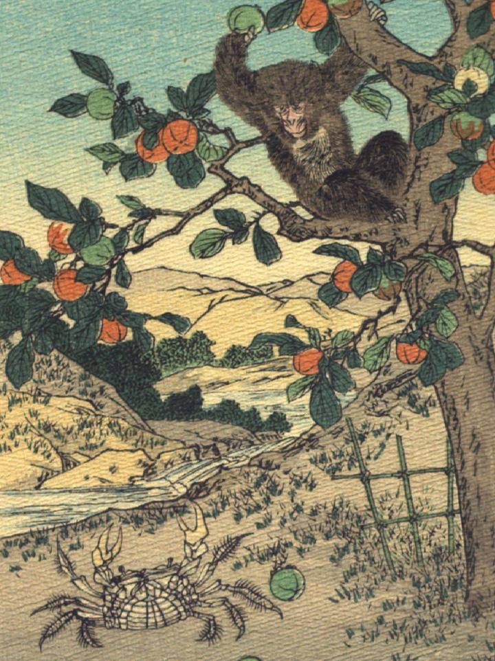

猿と蟹。柿の木の枝に腰掛けた猿が片手で青い実を掴み、蟹に向って投げようとしている。蟹は地上でハサミをあげ、猿の方を向いている。
著作者：J.Dautremer／出典：親書誌：U426_nichibunken_0106：La bataille du singe et du crabe／日付：2006／資源識別子：U426_nichibunken_0106_0003_0000
Copyright (c)2010- International Research Center for Japanese Studies, Kyoto, Japan. All rights reserved.